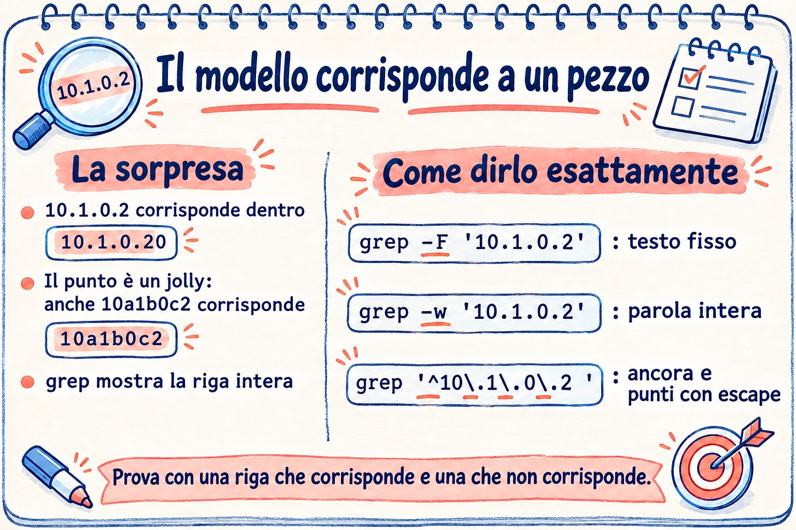

Lezione 3.3 · Regex e grep
Nella Lezione 3.2 hai ritagliato, ordinato e contato colonne. Ma quasi ogni domanda vera comincia prima: quali righe interessano. "I tentativi con password sbagliata", "le righe che non sono commenti", "gli accessi arrivati da quell'IP, e non da uno simile". Chi sceglie le righe è grep, e il linguaggio che usa per descrivere ciò che cerca è l'espressione regolare, la regex. Oggi impari entrambi a fondo: il punto che corrisponde a qualsiasi carattere, le ancore, le classi, la ripetizione, la differenza tra regex di base ed estesa, e le opzioni di grep che separano una ricerca da un report affidabile. Alla fine, uno script mostra cosa usa davvero sshd nelle due VM e da quale file arriva ogni valore.
| Scheda | Lezione 3.3 |
|---|---|
| Modulo | M3 · Testo ed editor, lezione 3 di 5 |
| Quando | Settimana 7 |
| Alla fine sei in grado di | Scrivere regex con ancore, classi, ripetizione e gruppi, in BRE e in ERE; sapere quando il punto, l'asterisco e le parentesi quadre fanno ciò che non volevi; cercare testo fisso con grep -F e parole intere con -w; usare una lista di pattern con -f senza cadere nella riga vuota; estrarre solo la parte che ha corrisposto con -o; togliere commenti e righe vuote da un file di configurazione; cercare in alberi di directory con -r; leggere lo stato di uscita di grep e distinguere "non ho trovato" da "non sono riuscito a leggere"; filtrare il log di SSH nelle due VM, nel file e nel journal |
| Prerequisiti | Lezione 1.5 (grep di base); Lezione 3.1 (pipe, virgolette, stato di uscita); Lezione 3.2 (cut, sort, uniq, ~/lab32/acesso.log) |
| Durata | Circa 2h30 |
| Snapshot | m3a3-inicio e m3a3-fim su entrambe le VM |
1 · Riscaldamento
Tre domande, a memoria. Scrivi le risposte; le Soluzioni le controllano alla fine.
- Cerchi l'IP
10.1.0.2in un log congrep 10.1.0.2 acesso.log. Scommessa: compaiono solo le righe di quell'IP? - Un file di configurazione ha commenti con
#a inizio riga. Scommessa:grep -v '^#'lascia solo le righe che contano? - Uno script fa
if ps aux | grep -q backup; then echo "já está rodando"; fi. Scommessa: cosa dice quando nessun backup è in esecuzione?
2 · Perché conta
grep è il comando che tutti pensano di saper già usare. Ed è proprio per questo che sbaglia in silenzio:
| La richiesta | La risposta sbagliata | Cosa provoca |
|---|---|---|
"Blocca l'IP 10.1.0.2, sta attaccando" | grep 10.1.0.2 acesso.log per controllare | Compaiono anche le righe di 10.1.0.20, 10.1.0.21 e 10.1.0.254. Il report accusa macchine innocenti, e il firewall blocca il file server |
| "Qual è la vera configurazione di SSH?" | grep -v '^#' /etc/ssh/sshd_config | Restano righe vuote e commenti indentati, e spariscono i file di /etc/ssh/sshd_config.d/. Giuri che la password è disattivata, e invece è attiva |
| "Avvisami se qualcuno sbaglia la password" | grep -q 'Failed' log 2>/dev/null in un if | Su Debian il file non esiste nemmeno; senza permesso, anche grep fallisce. Lo script dice "tutto pulito" per sempre |
| "Avvia il backup solo se non ce n'è un altro in esecuzione" | ps aux | grep -q backup | grep trova se stesso nell'elenco dei processi. Il backup non parte mai più, e nessuno se ne accorge, perché non dà errore |
| "Cerca chi ha fatto accesso da uno degli IP di questa lista" | grep -f lista.txt log | La lista termina con una riga vuota, e la riga vuota corrisponde a tutto. Il report dice che tutti sono nella lista |
"Trova dove è configurato PermitRootLogin sul server" | Aprire i file uno per uno nell'editor | Un grep -rn PermitRootLogin /etc/ssh/ risponde in un secondo, con il file e il numero di riga |
La regex è un linguaggio piccolo con poche regole. Chi conosce le regole scrive il pattern che corrisponde a ciò che deve, e solo a quello.
3 · Modello mentale
greplegge una riga alla volta e si chiede: esiste qualche parte di questa riga che corrisponde al pattern? Se esiste, la riga esce intera. Il pattern non deve corrispondere a tutta la riga, solo a un pezzo, in qualsiasi punto. Quasi ogni brutta sorpresa congrepnasce dal dimenticarlo: il pattern corrisponde dove non stavi guardando.
Padrão: 10.1.0.2 Linha: 10.1.0.20 - - [03/Nov/2026...] "GET / ..." 200 5120
1 0 . 1 . 0 . 2
│ │ │ │ │ │ │ │
1 0 . 1 . 0 . 2 0 - - [03/Nov... O trecho existe: a linha sai.
↑ O "0" que sobra não importa.
O ponto casa com QUALQUER caractere:
1 0 . 1 . 0 . 2
│ │ │ │ │ │ │ │
1 0 a 1 b 0 c 2 0 Também casa.
Como dizer exatamente o que você quer:
-F '10.1.0.2' o ponto vira ponto: texto fixo, sem regex
-w o trecho tem que ser uma palavra inteira: "10.1.0.20" não serve
'^10\.1\.0\.2 ' regex: no começo da linha, pontos de verdade, e um espaço depoisTre domande per ogni pattern, prima di eseguirlo: dove può corrispondere (all'inizio, alla fine, in qualsiasi punto?), cosa significa qui ogni carattere speciale (il punto è un punto o è "qualsiasi"?), e può corrispondere a niente (un * o una riga vuota corrispondono a ogni riga)? E una regola pratica: prima di fidarti di un pattern, provalo con una riga che deve corrispondere e una che non deve.


4 · Concetto a livelli
Essenziale
grep sceglie le righe. Le opzioni che userai ogni giorno:
| Opzione | Cosa fa | Esempio |
|---|---|---|
-i | Ignora maiuscole e minuscole | grep -i 'error' app.log |
-v | Inverte: mostra le righe che non corrispondono | grep -v '^#' arquivo |
-c | Conta le righe che corrispondono, invece di mostrarle | grep -c 'Failed' secure |
-n | Mostra il numero di riga | grep -n 'Port' sshd_config |
-w | Corrisponde solo a parole intere | grep -w 'root' /etc/passwd |
-x | Corrisponde solo alla riga intera | grep -x 'ana' nomes.txt |
-o | Mostra solo la parte che ha corrisposto, una per riga | grep -o 'from [0-9.]*' secure |
-l | Mostra solo il nome dei file che hanno almeno una riga | grep -l 'PermitRootLogin' /etc/ssh/* |
-r | Cerca in tutti i file di una directory | grep -rn 'PermitRootLogin' /etc/ssh/ |
-E | Regex estesa (ERE) | grep -E '401|403' |
-F | Testo fisso, senza regex | grep -F '10.1.0.2' |
-q | Non mostra nulla; solo lo stato di uscita | if grep -q ...; then |
Metti il pattern sempre tra virgolette singole. Senza virgolette, la shell della Lezione 3.1 lo manipola prima: un * diventa nome di file, uno spazio divide il pattern in due argomenti.
I caratteri speciali. Nella regex, quasi ogni carattere corrisponde a se stesso. Quelli che non lo fanno:
| Carattere | Significa | Esempio | Corrisponde a |
|---|---|---|---|
. | Qualsiasi carattere, esattamente uno | l.g | log, lag, l g, l.g |
^ | Inizio della riga | ^Port | Port 22, non #Port 22 |
$ | Fine della riga | bash$ | /bin/bash, non /bin/bash-old |
[abc] | Un carattere tra quelli elencati | [Pp]ort | Port, port |
[a-z] | Un carattere dell'intervallo | [0-9] | una cifra |
[^abc] | Un carattere che non è nella lista | [^#] | qualsiasi cosa tranne # |
* | Il precedente, zero o più volte | ab*c | ac, abc, abbbc |
\ | Toglie il potere speciale al successivo | \. | solo un punto |
La coppia di ancore dice dove può corrispondere il pattern: ^root solo all'inizio, nologin$ solo alla fine, ^$ è una riga vuota e ^root$ è una riga che contiene solo root.
Regex di base ed estesa. grep senza opzioni usa la regex di base (BRE). grep -E usa quella estesa (ERE), che aggiunge cinque operatori:
Nella ERE (grep -E) | Significa | Esempio |
|---|---|---|
+ | Il precedente, una o più volte | [0-9]+ |
? | Il precedente, zero o una volta | https? |
{n,m} | Il precedente, da n a m volte | [0-9]{1,3} |
| | Oppure | 401|403 |
( ) | Raggruppa | (ab)+, (GET|POST) /login |
Nella BRE, questi cinque caratteri sono normali: grep '(401|403)' cerca, letteralmente, una parentesi, 401, una barra verticale, 403 e un'altra parentesi. È la confusione numero uno della lezione, e il Passo 3 lo mostra.
Lo stato di uscita. grep termina con 0 se ha trovato almeno una riga, 1 se non ne ha trovata nessuna e 2 se c'è stato un errore: file che non esiste, permesso negato, regex non valida. In un if, sia 1 sia 2 finiscono nell'else.
Intermedio
Testo fisso e parola intera. Un IP, un nome di file con un punto, un percorso: sono testo, non regex. -F disattiva tutti i caratteri speciali e, già che c'è, è più veloce. -w richiede che la parte sia circondata da qualcosa che non sia lettera, cifra o _, oppure dall'inizio e dalla fine della riga:
grep -F '10.1.0.2' acesso.log # il punto è un punto, ma 10.1.0.20 corrisponde ancora
grep -Fw '10.1.0.2' acesso.log # solo 10.1.0.2, come parola
grep -w 'root' /etc/passwd # root, non rootkit né chrootPer -w, il punto separa le parole: 10.1.0.2 sono quattro parole di cifre con dei punti in mezzo, e -w guarda cosa viene prima del primo 1 e dopo l'ultimo 2.
Le classi con nome. Dentro le parentesi quadre, [[:digit:]], [[:alpha:]], [[:space:]], [[:upper:]], [[:lower:]] e [[:alnum:]] funzionano in qualsiasi lingua. [[:space:]] corrisponde a spazio e tabulazione, che è ciò che vuoi quasi sempre:
grep -Ev '^[[:space:]]*(#|$)' /etc/ssh/sshd_config # toglie i commenti, con o senza rientro, e le righe vuoteLeggi questo pattern a pezzi, perché lo userai per tutta la vita: ^ inizio, [[:space:]]* zero o più spazi o tabulazioni, e poi # (un commento) oppure $ (la fine, cioè la riga conteneva solo spazi). -v inverte: resta ciò che conta.
Estrarre con -o. -o stampa solo la parte che ha corrisposto. È il ponte tra grep e i filtri della Lezione 3.2:
grep -oE 'from [0-9.]+' /var/log/secure | cut -d' ' -f2 | sort | uniq -c | sort -rnLista di pattern. -f arquivo legge un pattern per riga; -e aggiunge un pattern sulla riga di comando stessa, e si può ripetere. Entrambi servono per liste di IP, utenti o parole:
grep -Fwf bloqueio.txt acesso.log # testo fisso, parola intera, pattern dal file
grep -e 'Failed' -e 'Invalid' secure # come grep -E 'Failed|Invalid'Contesto. -A 2 mostra 2 righe dopo ciascuna che ha corrisposto, -B 2 prima e -C 2 da entrambi i lati. In un log, l'errore raramente è da solo sulla riga: la causa è due righe prima. -m N si ferma dopo N righe trovate.
Ricerca nelle directory. -r scende nelle directory, senza seguire i link simbolici lungo il percorso; -R li segue. Con --include='*.conf' limiti i file; con -l mostri solo i nomi; con -h nascondi il nome su ogni riga; con -H forzi il nome anche con un solo file:
grep -rn 'PermitRootLogin' /etc/ssh/
grep -rl --include='*.conf' 'Listen' /etc/Le virgolette attorno a '*.conf' contano: senza, la shell sostituisce *.conf con i file .conf della cartella in cui ti trovi.
egrep e fgrep. Sono i vecchi nomi di grep -E e grep -F. Compaiono ancora negli script vecchi, ma la documentazione GNU li considera obsoleti, e i grep più recenti avvisano quando li usi. Scrivi grep -E e grep -F.
Ponte Windows
| In Windows | In Linux | La differenza che conta |
|---|---|---|
findstr | grep | findstr ha una regex limitata, senza +, ?, {} né |. grep -E ha la regex completa |
Select-String -Pattern | grep -E | Select-String ignora le maiuscole per impostazione predefinita; grep le distingue. In Linux, -i quando vuoi ignorarle |
Select-String -SimpleMatch | grep -F | Testo fisso, senza regex |
Select-String -NotMatch | grep -v | Uguale |
Select-String -Context 2 | grep -C 2 | Uguale |
Get-ChildItem -Recurse | Select-String | grep -r | Un'opzione, invece di una pipe |
-match di PowerShell | [[ $x =~ regex ]] in bash | Entrambi usano la regex estesa; in bash, la regex va senza virgolette sul lato destro |
Regex di .NET (\d, \s, .*?) | grep -P | \d e .*? non esistono né nella BRE né nella ERE. In grep -E, \d è solo una d. Usa [0-9] oppure -P |
Avanzato
La regex è golosa. * e + prendono la parte più lunga possibile. Con -o, si vede:
echo 'a="1" b="2"' | grep -o '".*"' # "1" b="2" (dal primo " fino all'ultimo ")
echo 'a="1" b="2"' | grep -o '"[^"]*"' # "1" e "2" (qualsiasi cosa che non sia virgolette)Il trucco di [^"]* vale per qualsiasi delimitatore: [^ ]* è "fino al prossimo spazio", [^]]* è "fino al prossimo ]". grep -P (regex di Perl) ha la versione pigra, ".*?", ma [^"]* funziona in qualsiasi grep, in sed e in awk.
Backreference. Un gruppo ( ) memorizza ciò che ha corrisposto, e \1 ripete quello stesso testo più avanti. Trova parole ripetute, un comune errore di battitura nei documenti:
grep -E '\b([a-z]+) \1\b' texto.txt # "de de", "o o"\b è il bordo di parola, la stessa idea di -w dentro il pattern. La backreference e \b sono estensioni GNU: funzionano nel grep delle due VM, ma non in ogni Unix.
La lingua cambia cosa è un carattere. In una locale UTF-8, . corrisponde a ç, che ha due byte. Con LC_ALL=C, ogni byte è un carattere, e ^.$ non corrisponde a una riga che contiene solo ç. Anche intervalli come [a-z] dipendono dalla locale nei sistemi vecchi; [[:lower:]] è sempre sicuro. E LC_ALL=C grep -F su un log di vari gigabyte è molto più veloce, perché non deve decodificare l'UTF-8.
La regex fuori da grep. Lo stesso linguaggio compare in molti posti, ognuno con la sua variante:
| Dove | Variante | Esempio |
|---|---|---|
grep, sed | BRE di default; ERE con -E | sed -E 's/[0-9]+/N/' |
awk | ERE | awk '/Failed/' |
[[ =~ ]] in bash | ERE | [[ $ip =~ ^[0-9.]+$ ]] |
vim | BRE, con extra propri | /\<root\> |
journalctl -g | PCRE2 (stile Perl) | journalctl -u ssh -g 'Failed password' |
find -regex | Corrisponde al percorso intero | find /etc -regex '.*\.conf' |
sed e awk sono la Lezione 3.4; vim, la 3.5. Ciò che impari oggi vale in tutti e tre.
La regex non è un parser. Un IP con ([0-9]{1,3}\.){3}[0-9]{1,3} corrisponde anche a 999.999.999.999. Per trovare IP in un log, basta: il log non inventa IP. Per validare l'input di un utente in uno script, non basta. La regola generale: la regex serve a trovare; per validare, usa lo strumento che capisce il formato.
5 · Rocky × Debian
| Cosa | rocky-lab | debian-lab | Come verificare |
|---|---|---|---|
Versione di grep | GNU grep 3.6 | GNU grep 3.8 | grep --version | head -1 |
egrep e fgrep | Funzionano senza avvisi | Funzionano, ma avvisano: egrep: warning: egrep is obsolescent | egrep x /dev/null |
Backslash senza significato (\-, \ ) | Accettato in silenzio | Avvisa: warning: stray \ before - | grep '\-' /dev/null |
grep colorato | Sì: un alias in /etc/profile.d/colorgrep.sh | No, di default: l'alias è commentato in ~/.bashrc | type grep |
| Log di SSH | /var/log/secure, solo per root | Solo nel journal | sudo ls -l /var/log/secure |
| Unit di SSH in systemd | sshd.service | ssh.service | systemctl status sshd oppure ssh |
| Configurazione di SSH | /etc/ssh/sshd_config con Include di /etc/ssh/sshd_config.d/*.conf; Rocky porta già 50-redhat.conf | Lo stesso Include; la cartella di solito è vuota | sudo ls /etc/ssh/sshd_config.d/ |
grep -P | Disponibile | Disponibile | grep -P '\d' <<< 1 |
La differenza che dà più fastidio al lavoro è quella del log di SSH: lo stesso script di allerta, che legge /var/log/secure, su Debian non trova nulla e non si lamenta. Il Guasto A se ne occupa.
6 · Lab guidato
Sei rodrigo, su rocky-lab, e raggiungi debian-lab con ssh deb. Tutto avviene in ~/lab33, su entrambe le VM. I file di sistema e i log reali vengono solo letti: nessun passo cambia la configurazione di SSH. Il Passo 7 è la sfida della lezione.

Passo 0 · Snapshot, cartella e i file del lab
In Proxmox, crea lo snapshot m3a3-inicio di entrambe le VM. Su rocky-lab:
eval "$(ssh-agent -s)"; ssh-add
ssh -o BatchMode=yes deb hostname
mkdir -p ~/lab33; ssh deb 'mkdir -p ~/lab33'
cd ~/lab33
cp ~/lab32/acesso.log .
grep --version | head -1; ssh deb 'grep --version | head -1'Se ~/lab32/acesso.log non esiste più, ricrealo con l'here-doc del Passo 0 della Lezione 3.2. Ora un pezzo di log di SSH nel formato di Rocky. Gli IP appartengono ai blocchi riservati alla documentazione, quindi non sono di nessuno:
cat > ssh.amostra <<'EOF'
Nov 3 08:10:01 rocky-lab sshd[2101]: Failed password for root from 203.0.113.9 port 51022 ssh2
Nov 3 08:10:04 rocky-lab sshd[2101]: Failed password for root from 203.0.113.9 port 51022 ssh2
Nov 3 08:11:20 rocky-lab sshd[2140]: Failed password for invalid user admin from 198.51.100.4 port 40110 ssh2
Nov 3 08:11:22 rocky-lab sshd[2140]: Failed password for invalid user admin from 198.51.100.4 port 40110 ssh2
Nov 3 08:12:00 rocky-lab sshd[2177]: Accepted publickey for rodrigo from 10.1.0.20 port 50001 ssh2: ED25519 SHA256:k3Yd9
Nov 3 08:13:15 rocky-lab sshd[2190]: Failed password for invalid user oracle from 203.0.113.9 port 51200 ssh2
Nov 3 08:14:02 rocky-lab sshd[2201]: Invalid user test from 192.0.2.66 port 33000
Nov 3 08:14:05 rocky-lab sshd[2201]: Failed password for invalid user test from 192.0.2.66 port 33000 ssh2
Nov 3 08:15:30 rocky-lab sshd[2230]: Failed password for rodrigo from 10.1.0.31 port 50110 ssh2
Nov 3 08:15:40 rocky-lab sshd[2230]: Accepted password for rodrigo from 10.1.0.31 port 50110 ssh2
Nov 3 08:16:00 rocky-lab sudo[2250]: rodrigo : TTY=pts/0 ; PWD=/home/rodrigo ; USER=root ; COMMAND=/usr/bin/tail -n 20 /var/log/secure
Nov 3 08:17:12 rocky-lab sshd[2266]: Connection closed by authenticating user root 203.0.113.9 port 51300 [preauth]
EOFE un file di configurazione nello stile di sshd_config, con le trappole messe apposta. Questo va con printf, e non con here-doc, perché la riga 9 comincia con una tabulazione, e una tabulazione incollata nel terminale può diventare spazi:
printf '# Exemplo no estilo do sshd_config\nPort 22\n\n#PermitRootLogin prohibit-password\nPermitRootLogin no\n # MaxSessions 10\nPasswordAuthentication yes\n \n\t#ListenAddress 0.0.0.0\nMaxAuthTries 3\n#PasswordAuthentication no\n' > conf.amostra
cat -A conf.amostra
wc -l acesso.log ssh.amostra conf.amostra# Exemplo no estilo do sshd_config$
Port 22$
$
#PermitRootLogin prohibit-password$
PermitRootLogin no$
# MaxSessions 10$
PasswordAuthentication yes$
$
^I#ListenAddress 0.0.0.0$
MaxAuthTries 3$
#PasswordAuthentication no$
15 acesso.log
12 ssh.amostra
11 conf.amostra
38 totalcat -A, della Lezione 3.2, mostra il $ a fine di ogni riga e il ^I al posto della tabulazione. Fai attenzione alla riga 6 (commento con rientro di spazi), alla riga 8 (solo spazi) e alla riga 9 (commento con rientro di tabulazione). Copia i tre file su Debian:
scp acesso.log ssh.amostra conf.amostra deb:lab33/
ssh deb 'cd ~/lab33 && wc -l acesso.log ssh.amostra conf.amostra && cat -A conf.amostra | sed -n 9p'L'ultima riga di Debian deve mostrare ^I#ListenAddress 0.0.0.0$. Se mostra spazi, il problema non è la copia: rifai il printf.
Passo 1 · Il punto che corrisponde a qualsiasi cosa
Il firewall segnala che 10.1.0.2 sta facendo cose strane. Controlli nel log:
Decidi 1 · Esegui grep -c 10.1.0.2 acesso.log. Che numero esce?
- A) 0
- B) 4
- C) 15
- D) Un errore, perché il pattern ha dei punti e non è tra virgolette
Scegli la lettera prima di guardare la tabella.
grep -c 10.1.0.2 acesso.log
grep 10.1.0.2 acesso.log | cut -d' ' -f1 | sort | uniq -c4
4 10.1.0.20| Se hai scelto | Risultato | Perché |
|---|---|---|
| A | ❌ Sbagliato | È il numero che volevi: 10.1.0.2 non compare nel log. Ma grep cerca una parte, e 10.1.0.2 è una parte di 10.1.0.20. |
| B | ✅ Giusto | Le quattro righe di 10.1.0.20 contengono la parte 10.1.0.2, seguita da uno 0 che grep non ha chiesto di guardare. Il report accuserebbe la macchina sbagliata. |
| C | ❌ Sbagliato | Il punto corrisponde a qualsiasi carattere, ma le cifre del pattern restano obbligatorie. Solo quattro righe hanno 10, qualcosa, 1, qualcosa, 0, qualcosa e 2 in sequenza. |
| D | ❌ Sbagliato | Il punto non è speciale per la shell, solo per la regex. Senza spazi, *, ? né $, il pattern passa intatto. Le virgolette singole restano comunque l'abitudine giusta. |
Da ricordare: il pattern corrisponde a un pezzo della riga. Per grep, "contiene" non è "è".
Sono due problemi insieme. Il primo è quello della tabella: la parte in mezzo a un'altra. Il secondo è il punto, che corrisponde a qualsiasi carattere:
echo '10a1b0c2' | grep 10.1.0.210a1b0c2Ora i tre strumenti del Modello mentale, uno alla volta:
grep -cF '10.1.0.2' acesso.log # 4: il punto ora è un punto, ma 10.1.0.20 continua a corrispondere
grep -cw '10.1.0.2' acesso.log # 0: parola intera; dopo il 2 viene uno 0, non un bordo
grep -cFw '10.1.0.2' acesso.log # 0: testo fisso E parola intera, quello giusto per un IP
grep -cw '10\.1\.0\.20' acesso.log # 4: lo stesso, in regex, con i punti con l'escapePer un IP, un nome utente o un percorso, la combinazione di tutti i giorni è grep -Fw. La regex con \. serve quando hai bisogno di una vera regex attorno all'IP.
Passo 2 · Ancore e la configurazione che conta
Domanda classica: "cosa c'è di attivo in questo file di configurazione?". La risposta che tutti danno per prima è togliere le righe che iniziano con #.
Decidi 2 · Quante righe restano con grep -v '^#' conf.amostra?
- A) 4
- B) 8
- C) 6
- D) 11
Scegli la lettera prima di guardare la tabella.
grep -vn '^#' conf.amostra | cat -A2:Port 22$
3:$
5:PermitRootLogin no$
6: # MaxSessions 10$
7:PasswordAuthentication yes$
8: $
9:^I#ListenAddress 0.0.0.0$
10:MaxAuthTries 3$| Se hai scelto | Risultato | Perché |
|---|---|---|
| A | ❌ Sbagliato | Quattro è il numero di direttive attive. Ma ^# toglie solo le righe il cui primo carattere è #, e non tutto ciò che è commento comincia così. |
| B | ✅ Giusto | Escono le righe 1, 4 e 11. Restano la riga vuota, la riga di spazi e i due commenti con rientro: nella riga 6 il primo carattere è uno spazio; nella 9, una tabulazione. |
| C | ❌ Sbagliato | Sei sarebbe togliere anche le righe bianche, oppure anche i commenti con rientro. ^# non fa nessuna delle due cose. |
| D | ❌ Sbagliato | Undici è il file intero. -v ha funzionato: ha tolto le tre righe il cui primo carattere è #. |
Da ricordare: l'ancora ^ dice "all'inizio della riga", e l'inizio è il primo carattere, anche se è uno spazio. Un commento con rientro, comune dentro i blocchi Match e nei file modificati a mano, supera ^#.
La versione che userai per tutta la vita, dalla sezione 4:
grep -Ev '^[[:space:]]*(#|$)' conf.amostraPort 22
PermitRootLogin no
PasswordAuthentication yes
MaxAuthTries 3Nota la differenza tra "riga vuota" e "riga bianca":
grep -c '^$' conf.amostra # 1: solo la riga 3, che non ha niente
grep -c '^[[:space:]]*$' conf.amostra # 2: la riga 3 e la riga 8, che ha solo spaziOra sul file vero. Su Rocky, sshd_config è leggibile solo da root; su Debian lo leggono tutti:
ls -l /etc/ssh/sshd_config; ssh deb 'ls -l /etc/ssh/sshd_config'
sudo grep -Ev '^[[:space:]]*(#|$)' /etc/ssh/sshd_config
ssh deb "grep -Ev '^[[:space:]]*(#|$)' /etc/ssh/sshd_config"Nota le virgolette nel comando di Debian: il pattern ha già virgolette singole al suo interno, quindi tutto il comando va tra virgolette doppie, e il $ dentro (#|$) non è seguito da un nome, quindi la shell locale non lo tocca. La prima riga attiva, su entrambe le VM, è Include /etc/ssh/sshd_config.d/*.conf. Tienilo a mente per il Passo 7.
Passo 3 · Regex di base ed estesa
Il capo vuole le righe di errore di autenticazione e di pagina inesistente, i codici 401 e 404. Scrivi l'"oppure" che conosci da ogni linguaggio di programmazione:
Decidi 3 · Esegui grep -c ' (401|404) ' acesso.log. Che numero esce?
- A) 6
- B) 0
- C) 4
- D) Un errore di sintassi, a causa delle parentesi
Scegli la lettera prima di guardare la tabella.
grep -c ' (401|404) ' acesso.log
grep -cE ' (401|404) ' acesso.log
grep -E ' (401|404) ' acesso.log | cut -d' ' -f1,9 | sort | uniq -c0
6
4 192.168.5.7 401
2 203.0.113.9 404| Se hai scelto | Risultato | Perché |
|---|---|---|
| A | ❌ Sbagliato | Sei è ciò che esce con -E. Senza, grep usa la regex di base, e lì parentesi e barra sono caratteri normali. |
| B | ✅ Giusto | Nella BRE, il pattern cerca letteralmente (401|404) tra due spazi. Nessuna riga ce l'ha. E grep non avvisa: zero è una risposta valida. |
| C | ❌ Sbagliato | Quattro sarebbe solo il 401. grep non sceglie una delle alternative; nella BRE, le alternative non le vede nemmeno. |
| D | ❌ Sbagliato | Le parentesi sono dentro virgolette singole: la shell non le vede, e per la BRE sono caratteri normali. Non c'è errore, c'è zero. |
Da ricordare: senza -E, i caratteri + ? { } | ( ) sono testo. Un grep che dovrebbe trovare e non trova niente è il peggior errore possibile: il report dice "nessun attacco".
Tre modi di scrivere la stessa cosa:
grep -cE ' (401|404) ' acesso.log # 6: ERE, la più leggibile
grep -c ' \(401\|404\) ' acesso.log # 6: BRE di GNU, con le barre; funziona, ma nessuno la legge
grep -c ' 40[14] ' acesso.log # 6: classe; un carattere tra 1 e 4
grep -c ' 40[134] ' acesso.log # 7: entra il 403 di /admin\| e \( nella BRE sono estensioni GNU; in un grep di un altro Unix, non funzionano. La regola pratica: se ti serve |, +, ? o {}, usa -E.
Passo 4 · Classi, ripetizione e l'asterisco che corrisponde a niente
Domanda: quali righe di conf.amostra hanno qualche numero?
Decidi 4 · Esegui grep -c '[0-9]*' conf.amostra. Che numero esce?
- A) 11
- B) 4
- C) 0
- D) Un errore, perché
*da solo diventa nome di file
Scegli la lettera prima di guardare la tabella.
grep -c '[0-9]*' conf.amostra
grep -c '[0-9]' conf.amostra
grep -cE '[0-9]+' conf.amostra
grep -n '[0-9]' conf.amostra11
4
4
2:Port 22
6: # MaxSessions 10
9: #ListenAddress 0.0.0.0
10:MaxAuthTries 3| Se hai scelto | Risultato | Perché |
|---|---|---|
| A | ✅ Giusto | * accetta zero ripetizioni. Ogni riga ha, da qualche parte, zero cifre di fila, persino la riga vuota. Il pattern corrisponde al niente, e il niente è in ogni riga. |
| B | ❌ Sbagliato | Quattro è la risposta alla domanda, e esce con '[0-9]' oppure -E '[0-9]+'. Con *, il pattern non richiede nessuna cifra. |
| C | ❌ Sbagliato | Corrispondere a niente è comunque corrispondere. grep non richiede che la parte abbia una lunghezza. |
| D | ❌ Sbagliato | Il pattern è tra virgolette singole: la shell non sostituisce * con nomi di file. Senza virgolette, allora sì, il risultato dipenderebbe dalla cartella. |
Da ricordare: un pattern che può corrispondere al vuoto corrisponde a ogni riga. Prima di eseguirlo, chiediti: "questo accetta zero caratteri?". Se li accetta, c'è un bug. * quasi mai sta da solo: ab*c, .*, [^"]*, sempre tra cose che richiedono qualcosa.
Ora l'utilità vera: estrarre solo la parte. Con -o, ogni pezzo che ha corrisposto esce su una riga:
grep -oE '([0-9]{1,3}\.){3}[0-9]{1,3}' ssh.amostra | sort -u10.1.0.20
10.1.0.31
192.0.2.66
198.51.100.4
203.0.113.9Leggi il pattern a pezzi: [0-9]{1,3} sono da una a tre cifre, \. un punto vero, il gruppo ( ){3} ripete quei due tre volte, e alla fine ancora un numero. I numeri di porta non entrano, perché non hanno punti; neanche SHA256:k3Yd9.
Passo 5 · Il log di SSH
Ora le domande vere. Quanti tentativi di password sono falliti?
grep -c 'Failed password' ssh.amostra7Vuoi separare l'utente di ogni tentativo e scrivi un pattern più preciso:
Decidi 5 · Quante righe corrispondono a grep -c 'Failed password for [a-z]* from' ssh.amostra?
- A) 7
- B) 3
- C) 4
- D) 0
Scegli la lettera prima di guardare la tabella.
grep -c 'Failed password for [a-z]* from' ssh.amostra
grep 'Failed password for [a-z]* from' ssh.amostra | cut -d' ' -f10-123
root from 203.0.113.9
root from 203.0.113.9
rodrigo from 10.1.0.31| Se hai scelto | Risultato | Perché |
|---|---|---|
| A | ❌ Sbagliato | Sette è il totale dei fallimenti. Ma quattro di loro dicono for invalid user admin from, e [a-z]* non corrisponde allo spazio. |
| B | ✅ Giusto | Corrispondono solo le righe in cui, tra for e from, ci sono solo lettere minuscole: root, root e rodrigo. I quattro tentativi con utente inesistente, i più pericolosi, sono spariti dal report. |
| C | ❌ Sbagliato | Quattro sono proprio quelle che non corrispondono: quelle con invalid user. |
| D | ❌ Sbagliato | [a-z]* corrisponde a root e rodrigo. Il pattern non è sbagliato per queste righe; è sbagliato per le altre. |
Da ricordare: un pattern troppo preciso nasconde righe senza avvisare. Dopo aver scritto un filtro, confronta il conteggio con quello del filtro largo (Failed password): se il numero è sceso, scopri quali righe sono uscite e perché.
Il pattern che copre entrambi i formati usa il ? della ERE, "il gruppo, zero o una volta":
grep -cE 'Failed password for (invalid user )?[a-z]+ from' ssh.amostra7Ora la domanda che ti arriva via e-mail ogni lunedì: quali IP hanno sbagliato più volte la password? È il ponte tra grep -o e la Lezione 3.2:
grep 'Failed password' ssh.amostra | grep -oE 'from [0-9.]+' | cut -d' ' -f2 | sort | uniq -c | sort -rn 3 203.0.113.9
2 198.51.100.4
1 192.0.2.66
1 10.1.0.31from nel pattern è l'ancora di contesto: l'IP che interessa è quello che viene dopo from, e non un numero qualsiasi della riga. E quali utenti inesistenti hanno provato a entrare?
grep -oE 'invalid user [a-z]+' ssh.amostra | cut -d' ' -f3 | sort | uniq -c
grep -oiE 'invalid user [a-z]+' ssh.amostra | cut -d' ' -f3 | sort | uniq -c 2 admin
1 oracle
1 test
2 admin
1 oracle
2 testtest compare due volte con -i, perché la riga 7 dice Invalid user, con la maiuscola. Quale sia giusto dipende dalla domanda: il primo conta i tentativi di password con utente inesistente; il secondo conta tutte le menzioni.
I log veri, sola lettura. Su Rocky, il log è in un file, solo per root. Su Debian, solo nel journal, e la unit si chiama ssh:
sudo grep -c 'Failed password' /var/log/secure
sudo grep 'Failed password' /var/log/secure | grep -oE 'from [0-9.]+' | cut -d' ' -f2 | sort | uniq -c | sort -rn | head
ssh -t deb "sudo journalctl -u ssh -o short --no-pager | grep -c 'Failed password'"
ssh -t deb "sudo journalctl -u ssh --no-pager -g 'Failed password' | tail -n 3"In un lab che parla solo con la rete locale, è normale ottenere zero. Per vedere una riga vera, sbaglia apposta. Da Rocky, prova a entrare su Debian con un utente che non esiste e digita qualsiasi cosa come password, due volte, e poi Ctrl+C:
ssh -o PubkeyAuthentication=no -o PreferredAuthentications=password nao-existe@10.1.0.52
ssh -t deb "sudo journalctl -u ssh --since '-5min' --no-pager | grep -E 'Invalid user|Failed password'"Se SSH su Debian risponde Permission denied (publickey) senza chiedere la password, l'autenticazione con password è disattivata lì, e nessuna riga Failed password apparirà. Non è un difetto: il Passo 7 mostra come confermarlo senza tirare a indovinare.
Il journal può intercalare righe che iniziano con -- (il segno di un reboot, per esempio). In un report, filtra con grep -v '^-- '. E journalctl -g filtra già da solo, con regex in stile Perl, senza pipe.
Dov'è configurato? Su rocky-lab:
sudo grep -rn 'PermitRootLogin' /etc/ssh/
sudo grep -rn --include='*.conf' 'PermitRootLogin' /etc/ssh/
grep -rn 'PermitRootLogin' /etc/ssh/; echo "status: $?"Il primo mostra ogni file e riga in cui compare la parola, commentata o no. Il secondo nasconde lo stesso sshd_config, perché il suo nome non finisce in .conf: --include filtra tutti i file, compreso quello principale. Il terzo, senza sudo, mostra Permission denied per i file che solo root legge, e termina con status 2, anche se ha trovato qualcosa in un altro file. Tieni a mente quel 2 per il Guasto A.
Passo 6 · Lista di pattern e la riga vuota
Nella Lezione 3.2 è rimasta una promessa: confrontare un log con una lista di IP bloccati. La lista è arrivata per e-mail, incollata da un foglio di calcolo, ed è stata salvata così:
printf '203.0.113.9\n198.51.100.4\n\n' > bloqueio.txt
cat -A bloqueio.txt203.0.113.9$
198.51.100.4$
$Tre righe, l'ultima vuota. Succede ogni volta che qualcuno preme Invio dopo l'ultimo elemento.
Decidi 6 · Quante righe di acesso.log corrispondono a grep -cFf bloqueio.txt acesso.log?
- A) 3
- B) 15
- C) 0
- D) 4
Scegli la lettera prima di guardare la tabella.
grep -cFf bloqueio.txt acesso.log
grep -cFwf bloqueio.txt acesso.log
grep -cFwf <(grep . bloqueio.txt) acesso.log
grep -Fwf <(grep . bloqueio.txt) acesso.log | cut -d' ' -f1 | uniq -c15
15
3
3 203.0.113.9| Se hai scelto | Risultato | Perché |
|---|---|---|
| A | ❌ Sbagliato | Tre è la risposta giusta alla domanda, e esce con la lista pulita. Con la riga vuota, il file ha tre pattern, e uno di loro è quello vuoto. |
| B | ✅ Giusto | Ogni riga di bloqueio.txt è un pattern, e il pattern vuoto corrisponde a ogni riga, come il * del Passo 4. Il report direbbe che tutti i 15 accessi vengono da IP bloccati. Nemmeno -w ti salva. |
| C | ❌ Sbagliato | 198.51.100.4 non compare in acesso.log, ma 203.0.113.9 compare tre volte. E la riga vuota corrisponde a tutto. |
| D | ❌ Sbagliato | Non ci sono quattro righe con IP della lista in acesso.log: 203.0.113.9 compare tre volte, e 198.51.100.4 nessuna. E la riga vuota corrisponde a tutto. |
Da ricordare: prima di usare un file come lista di pattern, puliscilo. grep . lascia solo le righe che hanno almeno un carattere, e <( ) della Lezione 3.1 consegna il risultato a -f come se fosse un file. Conta prima: grep -c . bloqueio.txt dà 2; grep -c '' bloqueio.txt dà 3.
E -F conta quanto la riga vuota. Una lista con 10.1.0.2, senza -F e senza -w, corrisponde a 10.1.0.20, come nel Passo 1:
printf '203.0.113.9\n10.1.0.2\n' > b2.txt
grep -cf b2.txt acesso.log # 7: i 3 di 203.0.113.9 e i 4 di 10.1.0.20
grep -cFwf b2.txt acesso.log # 3: solo 203.0.113.9La stessa lista, sul log di SSH. Due modi di contare, e non concordano:
grep -Fwf <(grep . bloqueio.txt) ssh.amostra | grep -oE 'from [0-9.]+' | sort | uniq -c
grep -oFwf <(grep . bloqueio.txt) ssh.amostra | sort | uniq -c 2 from 198.51.100.4
3 from 203.0.113.9
2 198.51.100.4
4 203.0.113.9La differenza è la riga 12: Connection closed by authenticating user root 203.0.113.9 port 51300. Non ha from. Il primo modo conta i "tentativi con from"; il secondo, con -o direttamente sulla lista, conta le "righe in cui compare l'IP". Entrambi sono giusti per domande diverse, e sei tu a dover sapere a quale domanda stai rispondendo.
Passo 7 · Sfida: cosa usa davvero sshd
La richiesta: "l'accesso con password è disattivato sui server?". Hai già visto che grep mostra ciò che è scritto nei file, e che possono esserci più file. Ma a decidere è sshd, e ha una regola che sorprende quasi tutti. Prima, la regola, in un file di prova nella tua cartella. L'here-doc va senza virgolette su EOF, di proposito, perché la shell sostituisca $HOME con il percorso vero, dato che sshd non capisce le variabili:
mkdir -p ~/lab33/teste.d
cat > ~/lab33/sshd_teste <<EOF
Include $HOME/lab33/teste.d/*.conf
PasswordAuthentication no
PermitRootLogin no
EOF
printf 'PasswordAuthentication yes\n' > ~/lab33/teste.d/50-cloud.conf
cat ~/lab33/sshd_teste
grep -rn 'PasswordAuthentication' ~/lab33/sshd_teste ~/lab33/teste.d/cat mostra Include /home/rodrigo/lab33/teste.d/*.conf, con il percorso già sostituito. grep mostra le due righe, una che dice no e una che dice yes. Quale vale?
Decidi 7 · Esegui sudo sshd -T -f ~/lab33/sshd_teste | grep -i '^passwordauthentication'. Cosa esce?
- A)
passwordauthentication no, perché è la riga del file principale - B)
passwordauthentication yes - C) Un errore, perché la stessa opzione compare due volte
- D) Entrambe le righe,
yeseno
Scegli la lettera prima di guardare la tabella.
sudo sshd -T -f ~/lab33/sshd_teste | grep -iE '^(passwordauthentication|permitrootlogin) ' | sortpasswordauthentication yes
permitrootlogin noEseguilo su entrambe le VM (copia sshd_teste e la cartella teste.d con scp -r, e rifai il cat > sshd_teste su Debian, per avere il $HOME di là). Se su Rocky sshd -T si lamenta di non riuscire a leggere un file della tua cartella, la causa probabile è SELinux, argomento di un modulo futuro: fai il Decidi su Debian e vai avanti.
| Se hai scelto | Risultato | Perché |
|---|---|---|
| A | ❌ Sbagliato | È ciò che quasi tutti suppongono: "il file principale comanda". In sshd, comanda la prima riga letta, e l'Include in cima viene letto prima. |
| B | ✅ Giusto | Per ogni opzione, sshd usa il primo valore che trova. L'Include porta lo yes prima del no, e il no viene ignorato. Per questo l'Include sta in cima a sshd_config in entrambe le distribuzioni: i file di sshd_config.d/ battono quello principale. |
| C | ❌ Sbagliato | Ripetere un'opzione non è un errore di sintassi; sshd -T si lamenta solo di opzioni inesistenti o valori non validi. Per questo il problema passa in silenzio. |
| D | ❌ Sbagliato | sshd -T mostra la configurazione risolta: una riga per opzione, già con il valore che ha vinto, in minuscolo. |
Da ricordare: grep sui file mostra i candidati; sshd -T mostra il vincitore. Un PasswordAuthentication no in sshd_config non vale niente se un file in sshd_config.d/ dice yes, e alcuni installer e immagini cloud mettono lì un file così. Nella vita reale, controlla sempre entrambi.
La stessa idea vale per quasi ogni servizio che ha un file di configurazione: nginx -T, postconf -n in Postfix, testparm -s in Samba, named-checkconf -p in BIND. Tutti stampano la configurazione come il programma l'ha capita.
Ora lo script della sfida. Mostra, per le opzioni che contano in un audit di SSH, dove è scritta ciascuna e il valore che sshd usa:
cat > ~/lab33/sshd-efetivo.sh <<'EOF'
#!/bin/sh
# sshd-efetivo.sh: dove sono scritte le opzioni di SSH e cosa usa davvero sshd
set -u
opcoes='port|permitrootlogin|passwordauthentication|pubkeyauthentication|maxauthtries|x11forwarding'
echo "== $(hostname): linhas ativas nos arquivos =="
sudo grep -rHnEv '^[[:space:]]*(#|$)' /etc/ssh/sshd_config /etc/ssh/sshd_config.d/ \
| grep -iE ":[0-9]+:[[:space:]]*($opcoes)[[:space:]]"
echo "== $(hostname): o que o sshd usa (sshd -T) =="
if ! efetivo=$(sudo sshd -T 2>&1); then
echo "ERRO: o sshd -T falhou; a configuração tem erro:" >&2
printf '%s\n' "$efetivo" >&2
exit 2
fi
printf '%s\n' "$efetivo" | grep -E "^($opcoes) " | sort
EOF
chmod +x ~/lab33/sshd-efetivo.sh
~/lab33/sshd-efetivo.shLeggi le due righe di grep dello script. La prima è il filtro del Passo 2, su più cartelle, con -H (il nome del file) e -n (la riga): ogni riga esce come arquivo:número:texto. La seconda lascia solo le opzioni della lista, e :[0-9]+: all'inizio del pattern salta il nome del file e il numero, in modo che il ^ dell'opzione parta dal testo. -i è necessario perché nel file c'è PermitRootLogin, e in sshd -T, permitrootlogin.
Lo script comincia con #!/bin/sh e non usa nulla che sia solo di bash. Eseguilo su Debian con sh, che lì è dash:
scp ~/lab33/sshd-efetivo.sh deb:lab33/
ssh -t deb 'sh ~/lab33/sshd-efetivo.sh'Confronta le due VM. Per ogni opzione della seconda parte, la domanda è: compare nella prima? Se non compare, il valore è quello predefinito di OpenSSH, e sai che nessuno l'ha scritto. Se compare in più di un file, vale ciò che dice sshd -T, e il primo letto spiega il perché. Su Rocky, cerca 50-redhat.conf: contiene, tra le altre, la riga di X11Forwarding. Se nell'installer di Rocky hai lasciato entrare root con la password, può esistere anche un 01-permitrootlogin.conf.
Bonus. Conta, per VM, quante righe attive ci sono in ogni file di configurazione di SSH:
sudo grep -rcEv '^[[:space:]]*(#|$)' /etc/ssh/sshd_config /etc/ssh/sshd_config.d/
ssh -t deb "sudo grep -rcEv '^[[:space:]]*(#|\$)' /etc/ssh/sshd_config /etc/ssh/sshd_config.d/"Nel secondo comando, \$ protegge il $ dentro le virgolette doppie, per sicurezza. -c con -r dà un numero per file, nel formato arquivo:contagem.
7 · Rompi e ripara
Guasto A · L'allerta che non scatta mai
Lo scenario: uno script di monitoraggio gira ogni ora e avvisa se qualcuno ha sbagliato la password di SSH. È stato scritto su Rocky, testato con un file di esempio e copiato su tutti i server. Sono mesi che dice "tutto pulito". Prepara lo script, su rocky-lab:
cd ~/lab33
cat > alerta.sh <<'EOF'
#!/bin/bash
# alerta.sh: avvisa se c'è stata una password sbagliata in SSH
log=${1:-/var/log/secure}
if grep -q 'Failed password' "$log" 2>/dev/null; then
echo "ALERTA: tentativas de senha errada em $log"
else
echo "tudo limpo"
fi
EOF
chmod +x alerta.sh
./alerta.sh ~/lab33/ssh.amostraALERTA: tentativas de senha errada em /home/rodrigo/lab33/ssh.amostraIl test è passato. Ora come gira davvero, senza argomento, con l'utente del monitoraggio, che non è root:
./alerta.sh
scp alerta.sh deb:lab33/
ssh deb 'lab33/alerta.sh'Osserva. Entrambe le VM rispondono tudo limpo. Su Debian, la password l'hai sbagliata tu stesso nel Passo 5, e la riga è nel journal. Su Rocky, non si può nemmeno sapere, perché lo script non ha mai letto il log.
Diagnostica. Togli il 2>/dev/null e guarda lo status:
grep -q 'Failed password' /var/log/secure; echo "status: $?"
ssh deb 'grep -q "Failed password" /var/log/secure; echo "status: $?"'grep: /var/log/secure: Permission denied
status: 2
grep: /var/log/secure: No such file or directory
status: 2Status 2: grep non è riuscito a cercare. Su Rocky, per un permesso; su Debian, perché il file non esiste nemmeno. Ma l'if chiede solo "zero o non zero", e il 2 finisce nell'else, insieme all'1, che è il "ho cercato e non ho trovato". Il 2>/dev/null ha nascosto l'unico indizio.
Decidi A · La riparazione. Cosa cambi nello script?
- A) Eseguire
grep -qda solo e gestire lo status concase $? in 0) ... ;; 1) ... ;; *) ... ;; esac - B) Togliere il
2>/dev/null - C) Sostituire il
2>/dev/nullcon l'opzione-sdigrep - D) Prima del
grep, controllare con[ -r "$log" ]se il file è leggibile
Scegli la lettera prima di guardare la tabella.
| Se hai scelto | Risultato | Perché |
|---|---|---|
| A | ✅ Giusto | Separa i tre casi che grep già comunica: trovato, non trovato, non sono riuscito. Il "non sono riuscito" diventa un errore, con messaggio e status propri, e il monitoraggio comincia a vedere il problema. |
| B | ⚠️ Funziona, ma | Il messaggio di errore comincia ad apparire, e questo già aiuta chi lo esegue a mano. Ma lo script continua a dire tudo limpo subito dopo, e in un cron il messaggio finisce in una e-mail che nessuno legge. Lo status 2 continua a cadere nell'else. |
| C | ❌ Sbagliato | -s è esattamente ciò che fa già il 2>/dev/null: nasconde i messaggi di file inesistente o illeggibile. Cambia sei con mezza dozzina. |
| D | ⚠️ Funziona, ma | Prende i due casi di oggi, permesso e file inesistente. Ma ci sono altri errori che [ -r ] non vede (il percorso è una cartella, il disco dà un errore di lettura), e grep sa già dire tutto questo. Leggere lo status è più semplice e più completo. |
Da ricordare: in un if grep, il "non sono riuscito a leggere" diventa "non ho trovato". Ogni volta che grep decide qualcosa, gestisci a parte lo status 2, e non buttare mai il suo errore in /dev/null senza gestirlo.
Ripara.
cat > alerta.sh <<'EOF'
#!/bin/bash
# alerta.sh: avvisa se c'è stata una password sbagliata in SSH
# status: 0 = eseguito (con o senza allerta), 2 = non è riuscito a leggere il log
log=${1:-/var/log/secure}
grep -q 'Failed password' "$log"
case $? in
0) echo "ALERTA: tentativas de senha errada em $log" ;;
1) echo "tudo limpo em $log" ;;
*) echo "ERRO: não consegui ler $log" >&2; exit 2 ;;
esac
EOF
./alerta.sh ~/lab33/ssh.amostra
./alerta.sh; echo "status: $?"
sudo ./alerta.sh
scp alerta.sh deb:lab33/; ssh deb 'lab33/alerta.sh; echo "status: $?"'ALERTA: tentativas de senha errada em /home/rodrigo/lab33/ssh.amostra
grep: /var/log/secure: Permission denied
ERRO: não consegui ler /var/log/secure
status: 2
...
grep: /var/log/secure: No such file or directory
ERRO: não consegui ler /var/log/secure
status: 2Con sudo, su Rocky, lo script legge il log e dice cosa c'è dentro. Su Debian, l'errore ora è onesto: il file non esiste, perché lì il log di SSH è nel journal. Lo script giusto per Debian legge da un'altra fonte:
ssh -t deb "sudo journalctl -u ssh --since today --no-pager | grep -c 'Failed password'"Un altro tranello su Debian: journalctl senza sudo, e senza che l'utente sia nel gruppo adm o systemd-journal, non fallisce. Mostra solo il journal dell'utente stesso, avvisa con un Hint: e termina con status 0. grep non trova niente e risponde 1, "tutto pulito". Lo stesso errore silenzioso, per un'altra strada. Uno script di monitoraggio dei log gira come root o con un gruppo di lettura, e tu controlli quale, con id, prima di fidarti del risultato.
Guasto B · Il backup che non parte mai
Lo scenario: un backup dura ore, e cron lo chiama ogni ora. Per non farne girare due insieme, qualcuno ha scritto un controllo all'inizio. Da allora, i backup si sono fermati. Prepara il controllo, su rocky-lab:
cat > ~/lab33/checa.sh <<'EOF'
#!/bin/bash
# checa.sh: só começa o backup se não houver outro rodando
if ps aux | grep -q 'backup-noturno'; then
echo "já existe um backup-noturno rodando; saindo"
exit 0
fi
echo "começando o backup-noturno"
EOF
chmod +x ~/lab33/checa.sh
pgrep -a backup-noturno; echo "pgrep: $?"
~/lab33/checa.shOsserva. pgrep non trova nessun backup-noturno e termina con 1. Eppure lo script dice já existe um backup-noturno rodando; saindo. Eseguilo ancora qualche volta: quasi sempre la stessa risposta.
Diagnostica. Esegui il pezzo dell'if senza -q, per vedere cosa ha trovato grep:
ps aux | grep 'backup-noturno'rodrigo 3412 0.0 0.1 221680 2304 pts/0 S+ 10:20 0:00 grep --color=auto backup-noturnogrep ha trovato se stesso. ps e il grep della pipe partono insieme, e quando ps elenca i processi, grep backup-noturno è già nell'elenco, con la parola nel comando. Dentro lo script non c'è l'alias del colore, e la riga mostra solo grep backup-noturno, ma l'effetto è lo stesso. Il "quasi sempre" è la corsa tra i due: a volte ps finisce prima che grep compaia, e il test passa per fortuna.
Ora un backup vero in esecuzione, per provare le riparazioni. Una copia di sleep con un altro nome fa la parte:
cp /usr/bin/sleep ~/lab33/backup-noturno
~/lab33/backup-noturno 300 &
pgrep -a backup-noturnoDecidi B · La riparazione. Come deve chiedere lo script se il backup è in esecuzione?
- A)
pgrep -x backup-noturno > /dev/null - B)
ps aux | grep -v grep | grep -q backup-noturno - C)
ps aux | grep -q '[b]ackup-noturno' - D)
ps aux | grep -c backup-noturno
Scegli la lettera prima di guardare la tabella.
| Se hai scelto | Risultato | Perché |
|---|---|---|
| A | ✅ Giusto | pgrep cerca nei nomi dei processi, non in un testo che genera lui stesso, e non si trova mai. -x richiede il nome esatto: un vim backup-noturno.conf non conta. Lo status risponde direttamente: 0 in esecuzione, 1 no. |
| B | ⚠️ Funziona, ma | Toglie la riga di grep, ma anche qualsiasi altra che abbia grep nel testo. E corrisponde a qualsiasi riga che citi il nome: un tail -f /var/log/backup-noturno.log aperto da qualcuno impedisce il backup. |
| C | ⚠️ Funziona, ma | Il trucco classico: [b] corrisponde a b, quindi il pattern trova backup-noturno; ma nella riga di grep il testo è [b]ackup-noturno, che il pattern non corrisponde. Funziona, nessuno lo capisce alla prima lettura, e il problema del tail -f resta. |
| D | ❌ Sbagliato | -c conta, e la riga dello stesso grep entra nel conteggio. Senza backup in esecuzione, la risposta è 1, non 0. E in un if, grep -c termina con status 0 ogni volta che conta qualcosa. |
Da ricordare: cercare un processo con ps | grep significa cercare in un testo che include lo stesso grep. Per i processi, usa pgrep: -x per il nome esatto, -f per cercare nell'intera riga di comando, -u per un utente.
Ripara.
cat > ~/lab33/checa.sh <<'EOF'
#!/bin/bash
# checa.sh: só começa o backup se não houver outro rodando
if pgrep -x backup-noturno > /dev/null; then
echo "já existe um backup-noturno rodando; saindo"
exit 0
fi
echo "começando o backup-noturno"
EOF
~/lab33/checa.sh
pkill -x backup-noturno; sleep 1
~/lab33/checa.sh
rm ~/lab33/backup-noturnojá existe um backup-noturno rodando; saindo
começando o backup-noturnoCon il processo in esecuzione, il controllo lo vede; senza, il backup parte. Copia checa.sh su Debian e verifica lo stesso comportamento. Un dettaglio di -x: il nome che pgrep confronta è il nome breve del processo, che il kernel taglia a 15 caratteri. Un programma chiamato backup-noturno-completo compare come backup-noturno-, e pgrep -x backup-noturno-completo non lo trova. In quei casi, pgrep -f, con un pattern ancorato al percorso del programma.
La morale
I due guasti sono grep che risponde, con tutta la correttezza, a una domanda diversa da quella che hai fatto. Nel Guasto A, la domanda era "ci sono stati fallimenti?", e grep ha risposto "non sono riuscito a leggere", che l'if ha tradotto come "no". Nel Guasto B, la domanda era "il backup è in esecuzione?", e grep ha risposto "la parola compare nell'elenco dei processi", e compare, nello stesso grep. Gli strumenti sono quelli di sempre: lo stato di uscita con i tre valori, 0, 1 e 2, gestiti a parte; un test con il caso che deve dare no, e non solo con quello che deve dare sì; e, per i processi, lo strumento fatto apposta. Nella vita reale, il controllo del backup va ancora oltre: flock -n /run/lock/backup.lock comando garantisce uno solo alla volta, senza nessuna corsa, e per un servizio di systemd la domanda giusta è systemctl is-active --quiet nome.
8 · Trappole
| Digiti o vedi | Cosa succede | Quello giusto |
|---|---|---|
grep 10.1.0.2 log | Corrisponde anche a 10.1.0.20, 10.1.0.21 e 10a1b0c2 | grep -Fw '10.1.0.2' log |
grep -v '^#' arquivo.conf | Restano righe bianche e commenti con rientro | grep -Ev '^[[:space:]]*(#|$)' arquivo.conf |
grep '(GET|POST) /login' | Zero righe, senza errore: nella BRE, parentesi e barra sono testo | grep -E '(GET|POST) /login' |
grep '[0-9]*' | Corrisponde a ogni riga, perché * accetta zero | grep '[0-9]' oppure grep -E '[0-9]+' |
grep -E '\d+' | \d non esiste nella ERE: cerca la lettera d | grep -E '[0-9]+', oppure grep -P '\d+' |
grep -o '".*"' | Prende dal primo all'ultimo " della riga | grep -o '"[^"]*"' |
grep -f lista.txt con riga vuota in fondo | Corrisponde a tutte le righe del file | grep -Fwf <(grep . lista.txt) |
grep padrão *.log senza virgolette sul pattern | La shell può sostituire un * o ? del pattern con nomi di file | Pattern sempre tra virgolette singole |
grep -r --include=*.conf senza virgolette | La shell sostituisce *.conf con i file della cartella corrente | --include='*.conf', e ricorda che nasconde i file senza .conf, come sshd_config |
if grep -q ... 2>/dev/null | L'errore di lettura diventa "non ho trovato" | grep -q ...; case $? in 0) ;; 1) ;; *) erro ;; esac |
ps aux | grep nome | grep trova se stesso | pgrep -x nome, oppure pgrep -a nome per vedere |
grep -v padrão per "togliere" righe da un file | Mostra a schermo, il file resta uguale | grep -v padrão arq > arq.novo, controllare, e solo allora sostituire |
grep PasswordAuthentication sshd_config per rispondere a "la password è attiva?" | Mostra ciò che è scritto, non ciò che vale | sudo sshd -T | grep -i passwordauthentication |
egrep e fgrep in uno script nuovo | Avviso di obsoleto nel grep 3.8 di Debian | grep -E e grep -F |
9 · Quiz
Dieci domande, senza consultare. Scrivi la lettera o la risposta di ciascuna e solo dopo apri le Soluzioni.
1. Cosa conta grep -c 'a*' arquivo.txt, e perché?
2. Quale comando mostra solo le righe attive di /etc/ssh/sshd_config, senza commenti (con o senza rientro) e senza righe bianche?
- A)
grep -v '^#' /etc/ssh/sshd_config - B)
grep -Ev '^[[:space:]]*(#|$)' /etc/ssh/sshd_config - C)
grep -v '#' /etc/ssh/sshd_config - D)
grep '^[^#]' /etc/ssh/sshd_config
3. Nella regex di base, cosa significano +, ? e |? Scrivi "401 oppure 403 tra spazi" in ERE e in BRE con classe.
4. Quale comando mostra le righe di /etc/group che contengono la parola wheel intera, ignorando le maiuscole?
- A)
grep -iw wheel /etc/group - B)
grep -i '^wheel$' /etc/group - C)
grep -wv wheel /etc/group - D)
grep -x wheel /etc/group
5. Quali sono i tre stati di uscita di grep e cosa significa ciascuno? Cosa mostra grep -q root /nao/existe; echo $??
6. Cosa mostra echo 'id="7" nome="ana"' | grep -o '".*"'? Come mostrare "7" e "ana", ciascuno su una riga?
7. Hai lista.txt, un IP per riga, con una riga vuota in fondo. Quale comando conta correttamente le righe di acesso.log con uno di questi IP?
- A)
grep -cf lista.txt acesso.log - B)
grep -cFwf lista.txt acesso.log - C)
grep -cFwf <(grep . lista.txt) acesso.log - D)
grep -cvf lista.txt acesso.log
8. Perché ps aux | grep sshd mostra una riga in più rispetto al numero di processi sshd? Quale comando risponde senza questo problema?
9. sshd_config dice PasswordAuthentication no. sshd_config.d/50-cloud.conf dice PasswordAuthentication yes. L'Include è in cima a sshd_config. Quale valore usa sshd, e quale comando lo conferma?
10. Which command lists the names of all files under /etc that contain the string PermitRootLogin?
- A)
grep -l PermitRootLogin /etc - B)
grep -rl PermitRootLogin /etc - C)
find /etc -name PermitRootLogin - D)
grep -rc PermitRootLogin /etc
10 · Flashcard e promemoria
Da sapere a memoria
grepmostra la riga intera quando un pezzo di essa corrisponde al pattern. "Contiene" non è "è".- Pattern sempre tra virgolette singole.
.qualsiasi carattere ·^inizio ·$fine ·[abc]uno della lista ·[^abc]uno fuori dalla lista ·*il precedente zero o più volte ·\toglie il potere speciale.- Nella ERE (
grep -E):+una o più ·?zero o una ·{n,m}da n a m ·|oppure ·( )gruppo. Nella BRE, questi cinque sono testo. - Un pattern che accetta il vuoto (
x*, una riga vuota in un-f) corrisponde a ogni riga. - IP, nome, percorso:
grep -Fw. Regex solo quando serve una regex. - Righe attive di configurazione:
grep -Ev '^[[:space:]]*(#|$)'. [[:space:]]è spazio e tabulazione.-omostra solo la parte; è il ponte versocut,sorteuniq -c.- La regex è golosa:
".*"arriva fino all'ultimo". Usa"[^"]*". - Stato di
grep:0trovato,1non trovato,2non è riuscito. Gestisci il2a parte. ps | grep nometrova lo stessogrep. Usapgrep -x nome.--include='*.conf'con le virgolette, e nasconde anche i file senza.conf.grepsui file mostra ciò che è scritto;sshd -Tmostra ciò che vale. Insshd, vince il primo valore letto.egrepefgrepsono obsoleti:grep -Eegrep -F.
Da consultare
| Domanda | Comando |
|---|---|
| Righe con un testo | grep 'texto' arquivo |
| Ignorando le maiuscole | grep -i 'texto' arquivo |
| Righe senza il testo | grep -v 'texto' arquivo |
| Quante righe | grep -c 'texto' arquivo |
| Con il numero di riga | grep -n 'texto' arquivo |
| Parola intera | grep -w 'root' /etc/passwd |
| Riga intera uguale | grep -x 'ana' nomes.txt |
| Testo fisso, senza regex | grep -F '10.1.0.2' log |
| IP esatto | grep -Fw '10.1.0.2' log |
| Più alternative | grep -E 'Failed|Invalid' oppure grep -e Failed -e Invalid |
| Lista di pattern | grep -Fwf <(grep . lista.txt) log |
| Solo la parte che ha corrisposto | grep -oE 'from [0-9.]+' secure |
| IP di un log | grep -oE '([0-9]{1,3}\.){3}[0-9]{1,3}' log | sort -u |
Righe attive di un .conf | grep -Ev '^[[:space:]]*(#|$)' arquivo |
| Righe bianche | grep -c '^[[:space:]]*$' arquivo |
| In tutti i file di una cartella | grep -rn 'texto' /etc/ssh/ |
| Solo i nomi dei file | grep -rl 'texto' /etc |
| File che non hanno | grep -rL 'texto' /etc/cron.d |
| Solo un tipo di file | grep -rn --include='*.conf' 'texto' /etc |
| Contesto attorno | grep -C 2 'erro' log (oppure -A, -B) |
| Fermarsi dopo N | grep -m 5 'erro' log |
Solo lo stato, in un if | grep -q ...; case $? in 0) ;; 1) ;; *) ;; esac |
| Parole ripetute | grep -E '\b([a-z]+) \1\b' texto |
| Regex di Perl | grep -P '\d+', grep -oP '".*?"' |
| Log in un file, Rocky | sudo grep 'Failed password' /var/log/secure |
| Log nel journal, Debian | sudo journalctl -u ssh --no-pager -g 'Failed password' |
| Top IP con password sbagliata | ... | grep 'Failed password' | grep -oE 'from [0-9.]+' | cut -d' ' -f2 | sort | uniq -c | sort -rn | head |
| Configurazione che usa SSH | sudo sshd -T | grep -i passwordauthentication |
| Processo in esecuzione | pgrep -x nome; per vedere: pgrep -a nome |
| Ricerca veloce in un log grande | LC_ALL=C grep -F 'texto' log |
Flashcard
| Fronte | Retro |
|---|---|
grep 10.1.0.2 nel log con 10.1.0.20 | Corrisponde: il pattern è un pezzo, e il punto è "qualsiasi" |
grep -F | Testo fisso: nessun carattere è speciale |
grep -w | Parola intera: prima e dopo, qualcosa che non è lettera, cifra o _ |
grep -x | L'intera riga deve corrispondere |
^# e # x | Non corrisponde: il primo carattere è uno spazio |
[[:space:]] | Spazio e tabulazione |
grep ' (401|404) ' senza -E | Zero: nella BRE, parentesi e barra sono testo |
grep -c '[0-9]*' | Ogni riga: * accetta zero |
[0-9]{1,3} | Da una a tre cifre (ERE) |
(invalid user )? | Il gruppo, zero o una volta |
".*" in a="1" b="2" | "1" b="2": la regex è golosa |
"[^"]*" | Dal " fino al prossimo " |
\1 | Ripete il testo che il gruppo 1 ha trovato |
\d in grep -E | La lettera d. Cifra: [0-9] oppure grep -P |
-f lista con riga vuota | Corrisponde a tutto |
grep . | Solo le righe con almeno un carattere |
Status 2 di grep | Non è riuscito: file inesistente, senza permesso, regex non valida |
grep -s | Nasconde i messaggi di file inesistente o illeggibile |
ps aux | grep x | Mostra anche lo stesso grep x |
pgrep -x | Nome esatto del processo, fino a 15 caratteri |
--include='*.conf' in /etc/ssh | Nasconde sshd_config |
sshd -T | La configurazione risolta, in minuscolo, una riga per opzione |
Due righe della stessa opzione in sshd | Vale la prima letta |
/var/log/secure | Log di autenticazione di Rocky, solo di root. Su Debian, non esiste |
journalctl -g | Filtra il journal con regex, senza pipe |
11 · Checklist di uscita
- [ ] Spiego perché
grep 10.1.0.2trova10.1.0.20, e cerco un IP esatto congrep -Fw. - [ ] Scrivo pattern con ancore, classi e ripetizione, e so quando un pattern corrisponde al vuoto.
- [ ] Uso la ERE con
-Eper+,?,{},|e( ), e riconosco quando un pattern ERE è stato eseguito senza-E. - [ ] Tolgo commenti e righe bianche da qualsiasi file di configurazione con un solo
grep. - [ ] Estraggo IP e utenti da un log di SSH con
-o, e li conto consort | uniq -c, su Rocky e su Debian. - [ ] Uso liste di pattern con
-Fwf, pulendo prima la riga vuota, e gestisco i tre stati digrepin uno script. - [ ] Controllo ciò che
sshdusa davvero consshd -T, e cerco i processi conpgrep, non conps | grep.
Ultimo esercizio, senza guardare. Tutto su debian-lab: entra con ssh deb e lavora in ~/lab33. Senza aprire questa lezione:
- Mostra solo le righe attive di
/etc/ssh/ssh_config, il file del client SSH, senza commenti e senza righe bianche. - Da
conf.amostra, mostra i nomi delle direttive che compaiono commentate (con o senza rientro), solo il nome, uno per riga, senza ripetizioni. La fraseExemplodella prima riga non conta. - Con
sudo, mostra gli IP che oggi hanno provato a entrare con un utente inesistente, dal journal, con il conteggio, dal maggiore al minore. - Scrivi
~/lab33/tem-usuario.sh: riceve un nome e, facoltativamente, un file (il predefinito è/etc/passwd), e diceexiste,não existeoppureerro, con status0,1e2. Prova conroot, connao-existee conroot /nao/existe. - Mostra il PID e la riga di comando di ogni processo
sshd, senza che il tuo stesso comando compaia nella risposta.
Apri le Soluzioni solo dopo questo, o dopo tre tentativi.
Reboot e verifica. Prima di riavviare, salva la risposta della sfida su entrambe le VM, per confrontare dopo:
cd ~/lab33
./sshd-efetivo.sh > efetivo-rocky-lab.txt 2>&1
ssh -t deb 'cd ~/lab33 && sh sshd-efetivo.sh > efetivo-debian-lab.txt 2>&1'
ssh -t deb 'sudo reboot'
sudo rebootDopo il ritorno, su rocky-lab:
eval "$(ssh-agent -s)"; ssh-add
cd ~/lab33
./sshd-efetivo.sh 2>&1 | diff - efetivo-rocky-lab.txt && echo "Rocky: igual"
ssh -t deb 'cd ~/lab33 && sh sshd-efetivo.sh 2>&1 | diff - efetivo-debian-lab.txt && echo "Debian: igual"'
./alerta.sh ssh.amostra; ./alerta.sh; echo "status: $?"
./checa.shLe due configurazioni uguali a ciò che avevi salvato prima, perché sshd legge gli stessi file a ogni boot. alerta.sh con i tre comportamenti giusti, e checa.sh che dice começando o backup-noturno, perché dopo il reboot nessun backup è in esecuzione. Se il diff mostra una differenza in sshd -T, leggila con attenzione: qualcosa ha cambiato un file di SSH, ed è esattamente la domanda a cui lo script serve a rispondere.
Snapshot di chiusura. Restano su entrambe le VM: la cartella ~/lab33, con i campioni, gli script e le risposte della sfida; la Lezione 3.4 usa ssh.amostra e acesso.log. I file delle lezioni precedenti restano lì, e /srv/equipe resta a 3770 root:equipe:
sudo find /srv/equipe -maxdepth 0 -printf '%M %m %u:%g %p\n'
ssh -t deb "sudo find /srv/equipe -maxdepth 0 -printf '%M %m %u:%g %p\n'"Sul nodo Proxmox:
qm snapshot 201 m3a3-fim
qm snapshot 202 m3a3-fim12 · Nella vita reale
Missione della settimana, sola lettura. Tre server reali che amministri. Su ciascuno, senza cambiare niente:
- La configurazione di SSH che vale:
sudo sshd -T | grep -E '^(port|permitrootlogin|passwordauthentication|pubkeyauthentication|maxauthtries|x11forwarding) ' | sort. Qualche server accetta password orootdirettamente da internet? Confronta con ciò che è scritto:sudo grep -rHnEv '^[[:space:]]*(#|$)' /etc/ssh/sshd_config /etc/ssh/sshd_config.d/. - Le password sbagliate in SSH da ieri. Su un server con file:
sudo grep 'Failed password' /var/log/secure(oppure/var/log/auth.log). Su uno con journal:sudo journalctl -u ssh --since yesterday --no-pager -g 'Failed password'(la unit può esseresshd). Quante righe? - I dieci IP che hanno sbagliato di più: la pipeline del Passo 5 sulla fonte del punto 2. Qualcuno è della tua stessa rete? Un IP interno che sbaglia la password molte volte può essere uno script con una password vecchia.
- Gli utenti inesistenti provati:
... | grep -oiE 'invalid user [^ ]+' | cut -d' ' -f3 | sort | uniq -c | sort -rn | head. I nomi raccontano la storia:admin,oracle,testepostgressono robot; il nome di un ex dipendente è un'altra conversazione. - Gli errori di sistema dell'ultima ora, con contesto:
sudo journalctl -p err --since '-1h' --no-pager | tail -n 20. Se qualcuno si ripete, faigrep -csu di esso per vedere quante volte. - Gli script che cercano un processo nel modo sbagliato:
sudo grep -rnE 'ps (aux|-ef) *\| *grep' /usr/local/bin /usr/local/sbin /etc/cron.d /etc/cron.daily 2>/dev/null. Ogni riga è una candidata al Guasto B. - Gli script che nascondono l'errore di
grep:sudo grep -rnE 'grep [^|]*-q[^|]*2> */dev/null' /usr/local/bin /usr/local/sbin /etc/cron.d 2>/dev/null. Ogni riga è una candidata al Guasto A.
Per il diario. Una riga per server: nome · senha e root no SSH (valor do sshd -T) · falhas de senha desde ontem · top 3 IPs · IPs internos entre eles · usuários inexistentes mais tentados · scripts com ps|grep · scripts com grep -q 2>/dev/null. Accanto a ogni scoperta, cosa faresti e chi dovrebbe approvare. Non correggere niente questa settimana: la missione è guardare.
Sfida della settimana. Esegui sshd-efetivo.sh su tutti i server Linux che amministri, uno alla volta, e salva l'output di ciascuno in ~/auditoria-ssh/NOME.txt sulla tua postazione. Poi, con grep sui file salvati, rispondi: quali accettano password? (grep -l '^passwordauthentication yes' ~/auditoria-ssh/*.txt) In quali entra root? In quali il valore che vale non è quello scritto nel sshd_config principale? Quest'ultima domanda è quella che nessuno fa, ed è quella che frega.
Domani, senza guardare. Prima di aprire il terminale, rispondi a memoria: perché grep 10.1.0.2 non basta per trovare un IP, e cosa basta? Perché grep -v '^#' non lascia solo le righe attive? Cosa cambia tra grep '(a|b)' e grep -E '(a|b)'? A cosa corrisponde [0-9]* in una riga senza cifre? Quali sono i tre stati di grep, e perché l'if li confonde? Poi, su una delle VM, esegui echo abc | grep -c 'x*' e ps aux | grep -c sshd; pgrep -c sshd, e spiega ogni risultato ad alta voce, dicendo su quale VM ti trovi.
13 · Con DeepTutor
Usa il DeepTutor della tua rete locale dopo il lab, non al suo posto. I comandi iniziano con !:
!quiz Aula 3.3: dieci domande nuove su regex di base ed estesa, opzioni digrepe stato di uscita.!explica regex gulosa: perché".*"arriva fino all'ultimo", con[^"]*e-Paffiancati.!feynman BRE e ERE: spieghi tu la differenza, e lui indica dove sei stato vago.!quebra grep que não acha: descrive ungrepche risponde zero o risponde tutto, e ti consegna, una alla volta, gli output dicat -A,echo $?egrep -cfinché non trovi la causa.!quiz 3.3: domande con pattern e piccoli file per prevedere l'output.!cartoes Aula 3.3: le flashcard della sezione 10, in ordine di ripasso.!erro: incolla ilgrepche ha dato un risultato strano, con due o tre righe dell'input, e lui dice la causa probabile e cosa provare.!revisao Aula 3.3: cosa ripassare prima della Lezione 3.4, in base a ciò che hai sbagliato finora.
Soluzioni commentate
Riscaldamento
- No. Compaiono anche le righe di
10.1.0.20,10.1.0.21e di qualsiasi altro IP che inizi con10.1.0.2, perchégrepcerca un pezzo. E il punto corrisponde a qualsiasi carattere. Quello giusto ègrep -Fw '10.1.0.2'. È il Passo 1. - No. Restano le righe bianche e i commenti con rientro, il cui primo carattere è spazio o tabulazione. Quello giusto è
grep -Ev '^[[:space:]]*(#|$)'. È il Passo 2. - Dice "già in esecuzione" quasi sempre, perché
grep backupcompare nell'elenco dipse trova se stesso. Quello giusto èpgrep -x. È il Guasto B.
Quiz
- Tutte le righe del file.
a*accetta zeroa, e zeroaesiste in qualsiasi riga, anche in quella vuota. - B. La A lascia righe bianche e commenti con rientro. La C toglie anche le righe con
#in mezzo, come un valore che contenga#, ed è troppo rigida. La D toglie le righe vuote e quelle che iniziano con#, ma mantiene i commenti con rientro e le righe di soli spazi, perché lo spazio è un[^#]. - Nella BRE,
+,?e|sono caratteri normali. In ERE:grep -E ' (401|403) '. Con una classe, che funziona in entrambe:grep ' 40[13] '. - A. La B corrisponde solo a una riga che sia esattamente
wheel, e le righe di/etc/groupsonowheel:x:10:rodrigo. La C mostra le righe senza la parola. La D richiede la riga intera uguale awheel, come la B, e per di più distingue le maiuscole. 0ha trovato almeno una riga;1non ne ha trovata nessuna;2errore (file inesistente, senza permesso, regex non valida). Il comando mostragrep: /nao/existe: No such file or directorye poi2.- Mostra
"7" nome="ana", dal primo all'ultimo", perché.*è goloso. Per averli uno per riga:grep -o '"[^"]*"'. - C. La A e la B corrispondono a tutte le righe a causa della riga vuota, e la A tratta anche i punti come "qualsiasi carattere". La D mostra il contrario di quanto richiesto, e con la riga vuota nella lista non resta nessuna riga.
- Perché anche il
grep sshdè in esecuzione quandopselenca i processi, e la sua riga contienesshd.pgrep -a sshdmostra solo i processisshd;pgrep -c sshdli conta. yes. L'Includein cima viene letto per primo, e insshdil primo valore ottenuto per ogni opzione è quello che vale. Si conferma consudo sshd -T | grep -i passwordauthentication.- Tabella qui sotto.
| Se hai scelto | Risultato | Perché |
|---|---|---|
| A | ❌ Sbagliato | Senza -r, grep non entra nelle directory: risponde grep: /etc: Is a directory e non cerca niente. |
| B | ✅ Giusto | -r scende in tutte le sottodirectory di /etc, e -l mostra solo il nome di ogni file che ha almeno una riga con il testo. |
| C | ❌ Sbagliato | find -name cerca file chiamati PermitRootLogin, non file che contengono il testo. |
| D | ❌ Sbagliato | -c con -r mostra tutti i file, ciascuno con il conteggio, compresi quelli con 0. La lista richiesta sono solo i nomi di quelli che contengono. |
Ultimo esercizio
Su debian-lab, in ~/lab33:
grep -Ev '^[[:space:]]*(#|$)' /etc/ssh/ssh_config
grep -E '^[[:space:]]*#' conf.amostra | grep -oE '[A-Z][a-z]+[A-Z][A-Za-z]*' | sort -uIl primo mostra l'Include, l'Host * e le righe rientrate sotto di esso, come SendEnv e HashKnownHosts, a seconda della versione. Il secondo mostra ListenAddress, MaxSessions, PasswordAuthentication e PermitRootLogin. Il primo grep sceglie le righe commentate, con o senza rientro; il secondo toglie solo le parole con due maiuscole, il formato dei nomi di direttiva, e per questo Exemplo resta fuori. Un'altra soluzione che hai scritto vale, se dà le stesse quattro.
sudo journalctl -u ssh --since today --no-pager | grep 'Invalid user' | grep -oE 'from [0-9.]+' | cut -d' ' -f2 | sort | uniq -c | sort -rnSe hai sbagliato la password nel Passo 5, compare 10.1.0.51, l'IP di rocky-lab. La riga Invalid user viene scritta anche con la password disattivata in SSH, perché esce prima dell'autenticazione.
cat > ~/lab33/tem-usuario.sh <<'EOF'
#!/bin/bash
# tem-usuario.sh NOME [ARQUIVO]: esiste (0), non esiste (1) o errore (2)
arq=${2:-/etc/passwd}
grep -q "^$1:" "$arq"
case $? in
0) echo "existe" ;;
1) echo "não existe"; exit 1 ;;
*) echo "erro: não consegui ler $arq" >&2; exit 2 ;;
esac
EOF
chmod +x ~/lab33/tem-usuario.sh
cd ~/lab33
./tem-usuario.sh root; echo $?
./tem-usuario.sh nao-existe; echo $?
./tem-usuario.sh root /nao/existe; echo $?existe e 0; não existe e 1; il messaggio di grep, l'erro e 2. ^ e : nel pattern garantiscono il nome intero, a inizio riga: senza, tem-usuario.sh oot direbbe existe, a causa di root.
pgrep -a sshdUna riga per processo sshd, con il PID e la riga di comando: almeno il processo principale e uno per sessione aperta, la tua compresa. Nessun grep nella risposta, perché non c'è grep.